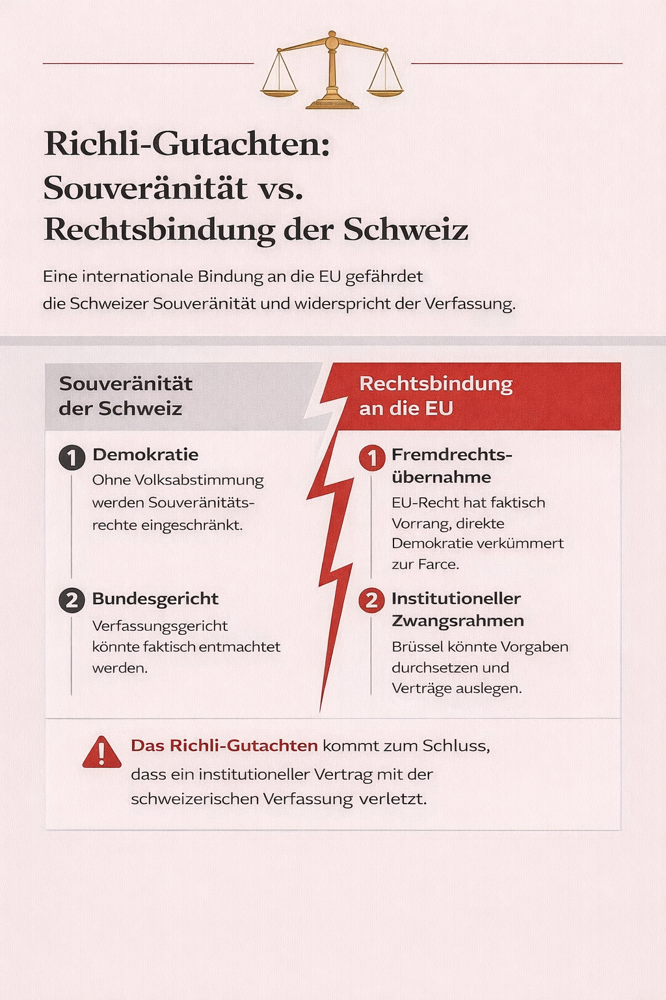
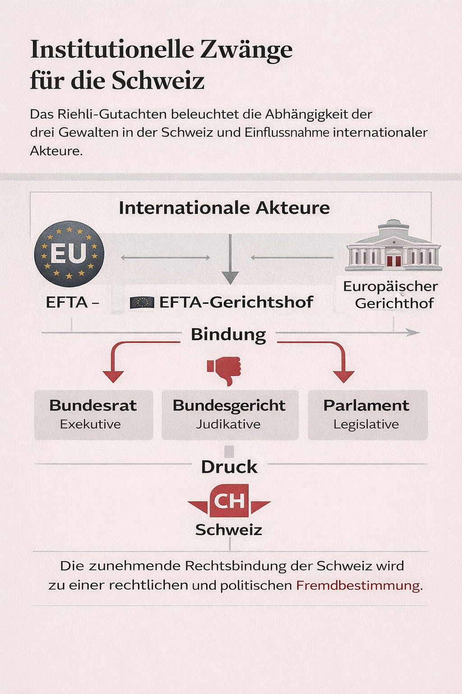
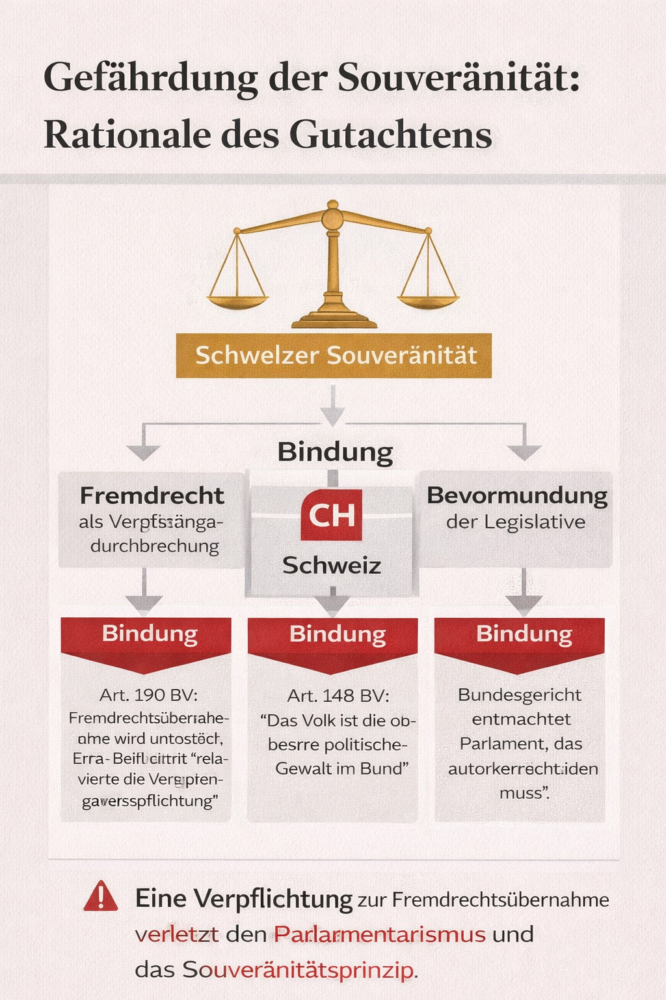
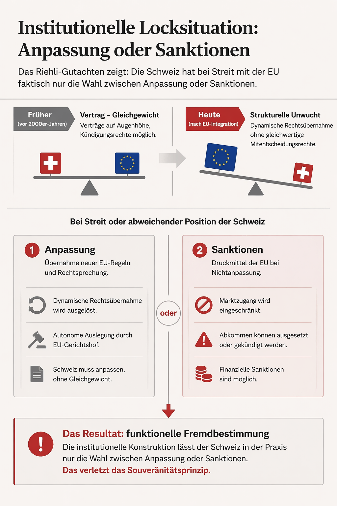
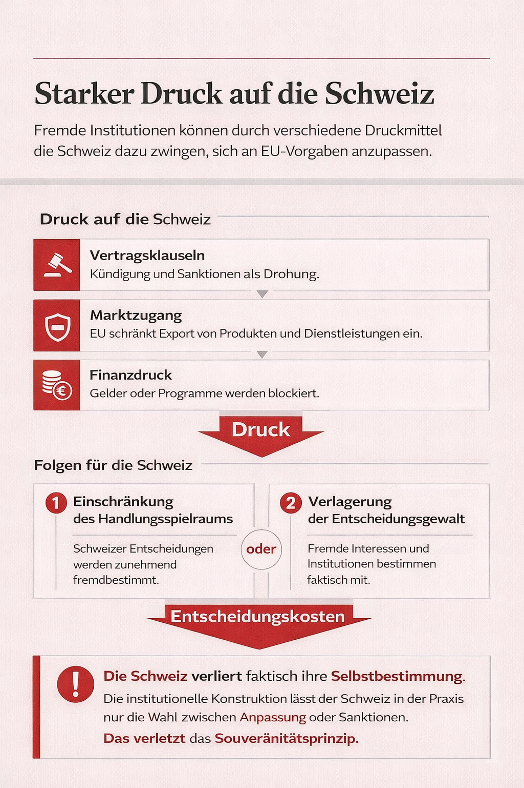

Kurzfassung für Eilige
Das Paket ist nicht «Bilaterale III», sondern ein Integrationsabkommen I – eine Teilintegration in die EU-Rechtsordnung. Die Schweiz gibt dabei mehr Kompetenzen ab als beim EU-Beitritt selbst.
- Gesetzgebungskompetenz der Bundesversammlung (Art. 163 BV)
- Verordnungsgebung des Bundesrats (Art. 182 BV)
- Vernehmlassungsrecht von Kantonen und Verbänden (Art. 147 BV)
- Unabhängigkeit des Bundesgerichts (Art. 189 BV)
Die «transversalen Ausgleichsmassnahmen» erzeugen eine Kartellbildung aller betroffenen Branchen gegen Referenden. Wer Nein stimmt, riskiert, dass die EU Massnahmen in anderen Sektoren verhängt. Das Referendum wird faktisch wirkungslos gemacht.
Entweder formale Verfassungsänderung (ehrlich) oder obligatorisches Referendum mit Doppelmehr (Volk + Kantone). Ein einfaches Volksmehr ist verfassungswidrig.

I. Der Paradigmenwechsel: Von Bilateral zu Integration
Das Paket ist eine «Integrationsabkommen I», nicht «Bilaterale III»
Die offizielle Bezeichnung täuscht. Das Paket ist faktisch ein Integrationsabkommen – es definiert nicht mehr bilaterale Einzelbeziehungen, sondern eine Teilintegration in die EU-Rechtsordnung.
Zwei unterschiedliche Integrationsmethoden – gleiche Wirkung
Das Paket kombiniert zwei Ansätze, die beide zum selben Ergebnis führen: Kompetenzverlust der Schweiz.
Integrationsmethode (z. B. Lebensmittelsicherheit):
- EU-Rechtsakte werden automatisch Schweizer Recht
- Sie werden publiziert in EUR-Lex (europäisches Rechtsinformationssystem)
- Direkte, formale Übernahme ohne echte Mitsprache
Äquivalenzmethode (z. B. Gegenseitige Anerkennung – MRA):
- Schweiz muss «inhaltlich gleiches Recht» erlassen
- Praktisch bleibt nur noch ein Vetorecht
- Kaum eigenständiger Spielraum, da «inhaltlich gleich» in Brüssel definiert wird
Formale Rechte, materiale Entleerung
Die Bundesversammlung, der Bundesrat und das Volk behalten formal ihre Institutionen – aber sie werden gezwungen, EU-Recht einfach zu übernehmen. Das ist «Enteignung der legislativen Kompetenz».

II. Vier materielle Verfassungsverletzungen
1. Verlust der Gesetzgebungskompetenz (Art. 163 BV)
Die Bundesversammlung behält formal das Gesetzgebungsrecht, hat aber praktisch nur noch ein Vetorecht. Neue EU-Rechtsakte müssen automatisch übernommen werden – es gibt kein echtes Mitspracherecht bei ihrer Entstehung.
Nationale Parlamente in EU-Mitgliedstaaten sitzen im Rat und haben Stimmrecht. Die Schweiz sitzt nirgendwo und erfährt neue EU-Regeln erst, wenn sie beschlossen sind.
2. Verlust der Verordnungsgebung (Art. 182 BV)
Der Bundesrat verliert die Verordnungsgebung. Die EU-Kommission erlässt die relevanten Verordnungen – die Schweiz muss folgen.
3. Verlust des Vernehmlassungsrechts (Art. 147 BV)
Das Vernehmlassungsverfahren wird faktisch abgeschafft. Kantone, Gemeinden und Verbände können sich nicht mehr in Schweizer Rechtsetzungsprozesse einbringen. Stattdessen müssen sie in Brüssel lobbyieren – ohne offiziellen Zugang.
Zivilgesellschaft und lokale Ebene verlieren Mitsprache in der Schweiz.
4. Verlust der Bundesgerichts-Autonomie (Art. 189 BV)
Das Bundesgericht verliert Unabhängigkeit. Es muss die Rechtsprechung des Europäischen Gerichtshofs (EuGH) beachten und anwenden.
Das ist ein fundamentaler Bruch mit der Gewaltenteilung: Die Schweizer Justiz wird zu einem Exekutivapparat der EU-Judikatur.
5. Das Schiedsgericht ist nicht wirklich autonom
Das Schiedsgericht ist formal bilateral, aber faktisch an EuGH-Auslegungen gebunden. Es ist keine echte unabhängige Gerichtsbarkeit, sondern ein Transmissionsriemen für EU-Recht.

III. Die vier Verfassungsverletzungen sind nicht angepasst
Formale vs. materiale Verfassungsänderung
Art. 163, 182, 147 und 189 BV werden material geändert, aber formal nicht angepasst. Das ist verfassungswidrig.
Die Bundesversammlung behält ihre Namen und Funktionstiteln – aber nicht ihre Kompetenzen.
IV. Die Demokratieverletzungen: Wie Referenden ausgehebelt werden
Verletzung der freien Willensbildung (Art. 34 Abs. 2 BV)
Die «transversalen Ausgleichsmassnahmen» verletzen das Recht auf freie Willensbildung gravierend. Sie erzeugen systemische Vetobremsen gegen Referenden.
Die geniale Kartellbildung der EU: Ausgleichsmassnahmen
Die EU kann in jedem anderen Abkommen Ausgleichsmassnahmen verhängen, wenn in einem einzigen Abkommen ein Nein-Referendum erfolgreich ist.
Praktisches Beispiel: Du stimmst Nein zum Landverkehr-Abkommen. Die EU kann dann sagen: «OK, dann gibt es auch keine Horizon/Erasmus+-Teilnahme mehr.» Plötzlich mobilisieren auch Universitäten und Forschungsinstitute gegen dein Nein-Referendum.
Fragliche Einheit der Materie
Art. 194 Abs. 2 BV fordert «Einheit der Materie» bei Abstimmungen. Wenn 11 verschiedene Abkommen unter ein einziges Referendum fallen, ist diese Einheit fraglich.

V. Der Kompetenzverlust ist grösser als beim EU-Beitritt
«Die Bundesversammlung und der Bundesrat müssen im Geltungsbereich der Binnenmarktabkommen mehr Kompetenzen an die EU abgeben als dies die Parlamente und Regierungen der EU-Mitgliedstaaten beim Beitritt zur EWG, EG oder EU taten.»
Das ist die Kern-Erkenntnis: Die Schweiz gibt mehr ab, ohne EU-Mitglied zu werden. EU-Mitgliedstaaten haben wenigstens Stimmrecht in den Entscheidungsgremien. Die Schweiz hat nur Beobachter-Status.
VI. Kantonale Autonomie: Art. 3 BV wird material geändert
Die gleichen Auswirkungen treffen die Kantone wie den Bund:
- Kantonale Gesetzgebungskompetenzen werden eingeschränkt
- Das Recht auf Mitsprache in Bundesangelegenheiten (Art. 45 BV) wird praktisch entleert
- Art. 3 BV (Kantonalautonomie) wird material geändert
Das ist nicht nur eine Bundesfrage – es ist eine Föderalismus-Frage.
VII. Mitwirkung ist illusorisch – nur Decision Shaping
«Mitwirkung» ist Lobbying ohne Rechtsposition
«Decision Shaping» ist kein echtes Mitspracherecht. Die Schweiz kann fachliche Beratung leisten – aber EU-Mitgliedstaaten sitzen im Rat und haben Stimmrecht. Die Schweiz sitzt nirgendwo und hat nur marginalen Einfluss.
Keine garantierten Ausnahmen
Es gibt keinen Anspruch auf Ausnahmen bei neuen EU-Rechtsakten. Der Gemischte Ausschuss kann nur «rechtstechnische Anpassungen» beschliessen – nicht substantielle Abweichungen.
Wenn die EU morgen beschliesst, dass alle Banken Basel IV einführen müssen, muss die Schweiz folgen. Es gibt keinen Rechtsanspruch auf eine «Schweizer Lösung».
VIII. Spezifische Problembereiche
1. Studiengebühren: 21,8 Millionen CHF/Jahr Kosten
Die Hochschulen tragen 21,8 Millionen CHF pro Jahr Mehrkosten. Der Bund zahlt nur 4 Jahre à 50 %, dann gar nichts mehr.
Folge: Universitäten müssen sparen – weniger Forschung, weniger Qualität. Das betrifft besonders junge Menschen und Forschende.
2. Horizon/Erasmus+: Kein Rechtsanspruch nach 2027
Diese Programme sind nur bis 2027 gesichert. Danach müssen sie neu verhandelt werden. Die EU kann jederzeit Nein sagen. Es gibt keinen Rechtsanspruch.
Brain-Drain ist programmiert. Junge Forschende und Studierende werden ins Ausland abwandern, weil die Schweiz die Verbindungen zu Horizont und Erasmus+ verliert.
3. Die Schutzklausel FZA ist zu schwach
Die neue Schutzklausel für die Personenfreizügigkeit funktioniert nicht. Man muss beweisen, dass Probleme (Arbeitslosigkeit, Wohnungskrise) allein vom FZA stammen. Das ist praktisch unmöglich, weil Arbeitslosigkeit und Wohnungskrise viele Ursachen haben.
4. Der Bundesrat hat zu teuer erkauft
Der Bundesrat «habe Schweizer Interessen schlecht wahrgenommen» und die fraglich funktionierende Schutzklausel «zu teuer erkauft» – indem er bei Studiengebühren zu viele Zugeständnisse machte.
IX. Abstimmungsmodus: Doppelmehr ist erforderlich
Obligatorisches Referendum mit Doppelmehr ist zulässig und geboten
Die Ratsdebatten 2020/21 zeigen, dass die Bundesversammlung selbst erkannt hat, dass das Paket Sui-Generis-Charakter hat. Ein Doppelmehr (Volk + Kantone) ist nicht nur zulässig – es ist geboten.
Begründung:
- a) Tiefe Eingriffe in die BV-Kompetenzordnung – Art. 163, 182, 147, 189 werden material geändert
- b) Mehr Kompetenzverlust als beim EU-Beitritt – die Schweiz gibt mehr ab, ohne EU-Mitglied zu werden
- c) Konflikt mit Art. 121a BV (Zuwanderungskontrolle) – die Personenfreizügigkeit wird erweitert, ohne dass die Schutzklausel wirksam funktioniert
- d) Im Extremfall könnte ein drittes oder viertes Integrationsabkommen einem EU-Beitritt gleichkommen – dann ist die direkte Demokratie entleert
Alternative: Formale Verfassungsänderung
Eine formale Verfassungsänderung würde alle Probleme lösen. Das wäre «die salomonische Lösung» – ehrlich, transparent, demokratisch.
Der Bundesrat hatte im Vernehmlassungsbericht zugestimmt, verwarf dann ohne Begründung.
X. Was bedeutet das für den Bürger?
Arbeitsmarkt: Unbegrenzte Konkurrenz ohne wirksame Bremse
Die Schutzklausel funktioniert nicht. Unbegrenzte EU-Zuwanderung bleibt bestehen. Löhne bleiben unter Druck, besonders im unteren und mittleren Einkommensbereich.
Wohnen: Preisexplosion ohne Schutzmechanismus
Wohnungsprobleme sind multikasual. Die Schutzklausel greift nicht. Mieten steigen dauerhaft. Junge Menschen können sich Wohnen in Schweizer Städten immer weniger leisten.
Bildung: Brain-Drain durch fehlende Programm-Sicherheit
Horizon/Erasmus+ sind nur bis 2027 gesichert. Danach gibt es keinen Rechtsanspruch. Junge Forschende und Studierende weichen ins Ausland aus. Swiss Science wird weniger global wettbewerbsfähig.
Demokratie: 50 Jahre Fremdbestimmung
Junge Menschen werden unter EU-Regeln geboren und sterben darunter. Sie haben zero Mitsprache bei den wichtigsten Entscheidungen ihres Lebens. Direkte Demokratie wird entleert – nicht durch Abstimmung, sondern durch schleichenden Kompetenzverlust.

XI. Richlis abschliessende Urteile
Kernurteil: Enteignung der Bundesversammlung
Die Bundesversammlung behält formal ihre Rechte, wird aber material gezwungen, EU-Recht einfach zu übernehmen. Das ist Enteignung der legislativen Kompetenz.
Obligatorisches Referendum ist geboten
Es wäre verfassungswidrig, wenn die Bundesversammlung das Paket NICHT dem obligatorischen Referendum mit Doppelmehr unterstellen würde. Die materiellen Voraussetzungen der Supranationalität sind erfüllt.
Zusammenfassungen
Detailanalyse
Quellen
- Hauptquelle: Paul Richli, Verfassungsrechtliche Bedeutung des Abkommenspakets Schweiz–EU, Rechtsgutachten, 9. April 2026 – PDF herunterladen →
- Art. 3 BV – Kantonale Souveränität
- Art. 34 Abs. 2 BV – Freie Willensbildung
- Art. 45 BV – Mitwirkung der Kantone im Bund
- Art. 147 BV – Vernehmlassungsverfahren
- Art. 163 BV – Gesetzgebungskompetenz der Bundesversammlung
- Art. 182 BV – Verordnungsgebung des Bundesrats
- Art. 189 BV – Zuständigkeit des Bundesgerichts
- Art. 194 Abs. 2 BV – Einheit der Materie
- Art. 14a ÄP-FZA – Schutzklausel Personenfreizügigkeit